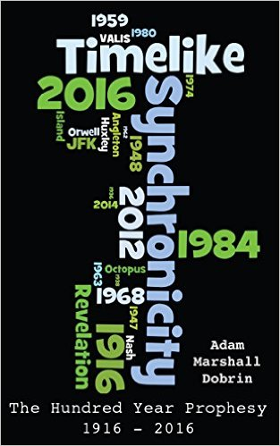
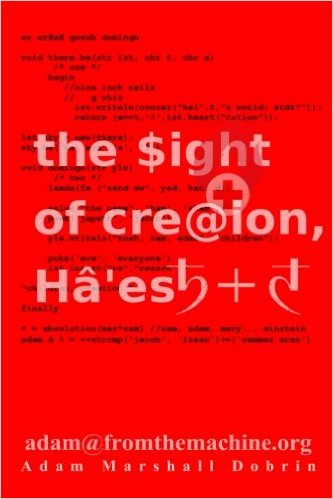
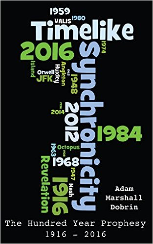
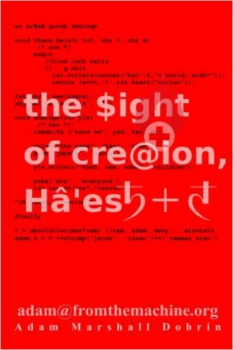

I am accepting charitable donations,.
ETH: 0xED5b06CCfD29a051d5bCeD2A9C334665c97211f8 | BTC: 3JmcKz2HfUDM4DTS2yufgexAmJ5Dh7PTM2 | DAI: 0x6Fc8F9A462A854Ab5933b44070Cb3899eB8C3045
Older works Lit and Why, hot&y;, and From Adam to Mary are also available.
2 4 6 8 Adam-Who
What goes up must come down?
And God said, Let there be lights in the firmament of the heaven
to divide the day from the night; and let them be for signs, and
for seasons, and for days, and years:
Genesis: 1:AD
The sun turned black like sackcloth
made of goat hair, the whole moon turned blood red, and the
stars in the sky fell to earth, as figs drop from a fig tree when
shaken by a strong wind.
Revelation 6:12-13
Like a lens that sits between the eyes of God and the world, I see the light of religion pouring out on the world around us. I am a sort of key, one that links ancient stories about a far-gone time to today; through just a little bit of artistic liberty in reading stories that were very much designed to show us that this old book is truly about our world. This generation is the one that is destined to see the apocalypse, the truth that ancient mythology and religion is designed to help us, here and now, walk the path towards building Heaven… both on Earth and in a world that we are just beginning to discover–to recreate–through divine inspiration. To me, this has always been about seeing that our technology is part of a grand plan to help the world grow and evolve through a time period that has, in the past, been set back a few steps by the introduction of tools that could be devastating weapons–were they to be used improperly… forget about falling into the wrong hands. This is the purpose of religion, to help us learn to use these new tools in a way that will further the goals of our great society–one founded through the story of the “I AM” at the beginning of AMerica, to be destined to preserve the great gifts of life, liberty, and the pursuit of happiness.
In reality, this far-gone time is a hidden reference to our world–seen through the eyes of angels from the future; ones who see our lack of sight related to technology, and the tools we use improperly just as we see the old wars and social problems of the Biblical times. It’s a commentary, one that has been hidden until now. This is the sword, the ability to finally see that we are the focus of this ancient work; and the story of a man fighting the problems of the world–by living them–that’s the “Fall of Adam.” Here, the Lion of Judah… not a king but a family member.. in our Den. That’s Eden.
The You and I verse, my Universe
I'm gonna love you
Till the heavens stop the rain
I'm gonna love you
Till the stars fall from the sky for you and I
The Doors, Touch Me
The stars of Revelation 1:20 are people, messianic characters that have lived through the repetition of the “Ancient Days,” ones which have seen the creation of Heaven, it’s parting of our great sea, the multitude, in order to preserve freedom and happiness. The stars have fallen, to the Earth–and on this stage we are more than players. Soon it will be up to us the direction that we move in, guided by the knowledge that secrecy and censorship lead to a Hell of darkness–and the proliferation of knowledge of this Holy technology… towards Heaven on Earth.
I see clearly through a fog, a darkness that the Egyptian plagues tell us is “so thick it can be felt.” It’s a long night, something like the opposite of Joshua’s long day–one that is hiding the light of the Son. In reality much of the force hiding me, something the Zohar also speaks quite a bit about, is due to the actualization of the prophesy that the world believes is an ancient story. It is part of the key, that the Christ is a man fighting against addiction, and injustice in America–fulfilling ancient words about a Trial in the book of Judges–there depicted as the war that I feel. Samson’s strength, garnered from character recognition truly comes from the vision of seeing that the story of Christ is all around us, in He-man, Thundercats, in the music of Cat Stevens and Hair. All around us, reference to Biblical stories sets the stage for the lighting of a fire, one that ends the darkness that would have lead to Hell–by showing us clearly that there is an influence not only helping us, but doing so in a way that makes the technology at hand very clear. It’s Nero’s fire, spreading across the internet that saves us from not knowing that these things are very real, and must be disclosed to the world in order to keep them from being used improperly.
The fire begins with words, just like the ancient myth of Prometheus tells us–the truth about language has been stolen from Zeus himself… and given to you. It starts with a single word, “ha’esh” which ties the parted sea of Moses to the Hebrew word for the fire of the Burning Bush. Truly though, the hand of God is in nearly ever Holy word, and the story of the prelude of the Trial of Jesus Christ makes this very clear, by telling us that the Lamb of God–the word–is truly “lam.” Iran from injustice, and in the process learned the secrets of religion, things like the fact that God’s word for “Lamb” truly Islam. It was just before the run that unified “lam” with the word “koran,” that I was shown something that solidified in my mind the fact that we are truly in Exodus.
I saw the Burning Bush, it was a Presidential inauguration, George W. Bush’s, and from his mouth the words of God proved beyond doubt that we are “in Exodus.”
This made me a sort of modern day Moses, a word which I later found out was a “macaronic” acronym, for Messiah of sea to SEA. This message, that Nostradamus’ religion of the seas was not about the Atlantic and Pacific… but rather that it is about seeing the message of God woven from Genesis to Revelation, is central to the Holy Grail. It’s the “baptism” in water that Matthew 3:11 speaks about, the knowledge that “Holy Water” in the context of the parted sea and the water Christ walks on… is people. Just like Prometheus’ story, the fire is technology, language, and the things that through their use–truly define what it means to be in civilization.
And the Fire
The heavens receded like a scroll being rolled up, and every
mountain and island was removed from its place.
Revelation 6:AD
God is a consuming fire.
2 Peter 3:10
believe not in Allah and His Messenger, He has prepared,
for those who reject Allah, a Blazing Fire!"
Koran 48:13
surely i see fire; i will bring to you from it some news,
or i will bring to you therefrom a burning firebrand so
that you may warm yourselves.
Koran 27:7
See, the LORD is coming with fire, and his chariots are like a
whirlwind; he will bring down his anger with fury, and his
rebuke with flames of fire.
Isaiah 66:15
From heaven he made you hear his voice to discipline you.
On earth he showed you his great fire, and you heard his
words from out of the fire
Deuteronomy 4:36
There the angel of the LORD appeared to him in flames of fire
from within a bush. Moses saw that though the bush was on fire
it did not burn up.
Exodus 3:2
When a calf, a lamb, or a goat is born, it must stay with its mother for seven days. From the eighth day on it may be accepted as a sacrifice by fire to the LORD.
There’s a great deal more in the Book which relates directly to my life, and to the information that’s contained in this book–the little book that the Lamb holds in his Hand. Teaching about the “Salt of the Earth,” the feeding of the masses with two fish, the names of Prophets and Jesus himself. These events all revolve around the teaching that language holds the key to proving that our civilization is created–through language, and time travel. They have been preserved and highlighted for us with religion, with stories that are coming true right before your eyes.
Jesus, full of the Holy Spirit, left the Jordan and was led
by the Spirit into the wilderness, 2 where for forty days he
was tempted by the devil. He ate nothing during those days,
and at the end of them he was hungry.
The devil said to him, “If you are the Son of God, tell this
stone to become bread.”
Luke 4:1-3
Dave Matthews answers in Christmas Song, "eat this bread,
and think of it as me... drink this wine and dream it will be..."
phenix and the Last Day
We are wandering together in the desert, about to see the light. The life of Christ in the New Testament is a prophesy, one which just like the Burning of Exodus is an allegory of events happening right now in our world. It’s about me… trying to light the world with the truth–what you are reading about. On Ash Wednesday I sent a very large e-mail out, one which talked about the Burning Bush, and how it relates to today. This series of e-emails tie directly to a story that was written into my life as a young man. It’s a microcosm, one of many, that sheds light on why it is that Christ wandered in the desert for 40 days, instead of the 40 years of Moses and Noah. Microcosms of futures-past have been written into our world, and directly into me.
When I was in my early teens I began writing a mass-mailing program on AOL. It was themed in the style of AOHell, and was designed to share pirated software in an underground circle. It would take decades for the microcosm to make sense to me, to see that the e-mails that my program sent out–it was called “Doomsday”– were a direct correlation to this event–to the advertising of the information in this book.
Islam talks about a fire of the Last Day, and to me… the fire is about to start. It is not the last day of creation though, simply the last day without the light of the Son. The end of pre-destination, caused by not knowing about time travel–and it’s direct relationship to the creation of our civilization. God walks us out of the desert of unknowing in order to keep this technology from changing our timeline without our knowledge or consent… to stop the creation of an “alternate 1955” as Back to the Future explains the Holy Light to the world.
This is not a day of doom, but rather the beginning of the “phenix” (that’s the handle I used on AOL… all without having any clue that it would tie directly to the “grey light” of Dave Matthews Band… singing unknowingly about Gene Grey and her link to the Pale Horse of the Apocalypse.
The light shows us that Prince Adam’s “Castle of Grey Skull ties directly to the Sword of the Messiah, to He-man being the Fifth Adam… after the Fifth Hebrew letter which is often a Hebrew abbreviation for God’s name.
In the Zohar, a commentary on the colors of light parallels a Revelation of another microcosm in my life. To me, the colors represented different aspects of the information that I am conveying here. Red for the fire that starts the parting of the sea, over the question of whether or not I am truly the Messiah. They are represented by the colors of covers of my books… books written before I had understood this–or that they were directly related to the colors of the Horses of the Apocalypse. Before writing the “red book,” which was title “In $ight of Creation, Ha’esh” I had written a white book, and then a black one… both of which intended to show us the hidden message of religion in our history–both in its design, and it’s purpose to reveal hidden technology.
These books were written in an order which did not correlate to the Horsemen, but did directly to a change that is seen in the words of the Zohar.
A blinding spark flashed
within the Concealed of the Concealed
from the mystery of the Infinite,
a cluster of vapor in formlessness,
set in a ring,
not white, not black, not red, not green,
no color at all.
When a band spanned, it yielded radiant colors.
 

It was after discovering this pattern, one which ended with my book titled “to the Kalor of the Son” a reference to both Osiris’ green (olive) complexion, and this answer to Revelation 3:16 (I think he’s saying I’m not cool…) that I created the cover of this book, one which matches the victorious shield of Revelation 9:17. These colors: red, yellow, and blue are for the fire that starts the global Revelation, yellow for friendship, and blue for the creation of Heaven.
You might not see it as clearly as I, not living the fulfillment of the words; but watching ancient scripture relate directly to events in your life gives you a new found understanding of what it means for a prophesy to be fulfilled. It’s years of my life that went into proving to me that this story in my life was recorded thousands of years ago. This is the microcosm of the Messiah, and it shows me clearly that the story of our world follows suit.
CopyleftMT
This content is currently released under the GNU GPL 2.0 license. Please properly attribute and link back to the entire book, or include this entire chapter and this message if you are quoting material. The source book is located at . and is written by Adam Marshall Dobrin.
Adam Marshall Dobrin adam@lamc.la fb.me/admdbrn linkedin.com/adam5 instagram.com/yitsheyzeus twitter.com/yitsheyzeus -----BEGIN PGP PUBLIC KEY BLOCK----- Version: GnuPG v2 mQENBFbGalABCADzLBdnHptF2MJCpdY8P/Mgnf4xj8F9pZSCwmd0J4Md8g3aTEdU CV9t0UQgNtjcxwfoenJLHgdZd4Mfscz9U+NN69OLXdPu4cdXOjTiHarPLjKnqIZw 3fmkM2ycvoUPkdVYCjwYYQxWRsWRpJf1dpmtPuz0L8ysh/WWsj2Ag2MrFYAo+sY6 dGZvaLsPhkZJcLXyFaP3c3Zt8ivrs4VV8+0kmMzScnR+oncVZbeMuQksoPxRmZgH mYu2KSf74lWOWVcaaBXOYX5pGNdhBUgq8ll+8tRH16G289r0cqRoPh/sjs/JRuIH KnCWG2UAUJF7ir04TS5A4Lwl9RYcQwVvb3BdABEBAAG0LUFkYW0gTWFyc2hhbGwg RG9icmluIChsYW1jLmxhKSA8YWRhbUBsYW1jLmxhPokBOQQTAQgAIwUCVsZqUAIb AwcLCQgHAwIBBhUIAgkKCwQWAgMBAh4BAheAAAoJEMgUPrR1B55trOwIALOQRTX0 YqXJXEMhX9CgxKNoNkpM2pdMdHl6CAVxhQ3hbNjIFnZbKbP88uxMEIOXXmYZ7gOy YqiDCu5I1V25suBb2ODSix75YQugfQ7H78pXHpTRu5sT+5SybItx7d+KUZaEj4pO tXWEemYl0cKK97RzpI0k1dmB7NqAVvqgbqQwd40MOf8QJVlGXnB1+5H2IbkYG6rD ixKGJEdes6i6nqvi/xz/s5hFVGUwTcVQbRU/fa1qT1Q7kHf1PlMu6yjuZTSz7WUG tWjobGwrVJkaeVWgLE4mcxMtity2IFTwOHvAuv8fi2EGQRQjXfPvxL7Vn4MNRl8x zLPV44D37QEknjy5AQ0EVsZqUAEIAMFS0+ZgSJzUPz0h0oiiRjfk2hapS3c1/Ysm R/h8sZ8/GOomdo3MEbTCkcuZ8ReAJhB2PofmwI4LAvW1x7Zwh1vfBKygfUs1s9lm ya/eHkjuZfqmeuEJZMHn6sxb3vqowWmvLhv3x0aWD8qLCIYoa1ntzTOIqxBEgxvU rF1/wd6OQLSJQEVNwPCx7CJI/5o/4W6pUaHk8amgPckkEdmlhRTRqFoAUV1Doivv d9JGYNYC88vS14Sw4Z9Xb7qBQJvG4hIh29gtQxk7Wz4m3ceR79MWT4eSGkH/rTGl w1OuQS2OkPvjgPWJt8San4zuPer17pJN7M5LWI0PStoX9pkud5kAEQEAAYkBHwQY AQgACQUCVsZqUAIbDAAKCRDIFD60dQeebWU6CADylAM5K18N2JGveL3D4dG25fdF vkrz8LOaiUmjAxijcRQBLkTPBK7QqoK0zN6MssMdlBGIOvZQwxSMIIrG6SqwR/go rmZHRuz17ceFTcxT8ZG3FuBY+xXrotXFjLxTmJ1wUeCSVXTc4NAwBzykgkQXOdIj qK1f/HnmMqsSmX4swuH0TZPNBBO7CNvLN6rdLBRfNn1h5XPs8VVtezg5ZDfCTf8S mucQGEwo/hJmr/orEucmETYSvTXOz+L5X5gNHpzYzE9590FYfbAKvrEhAliKbhhl 3Roie3kenrzelXo5N9Q0f2AKFrv1hRX9hBkwTbA18SKZ9XQbWMusX8YhvfLr =dvAJ -----END PGP PUBLIC KEY BLOCK-----